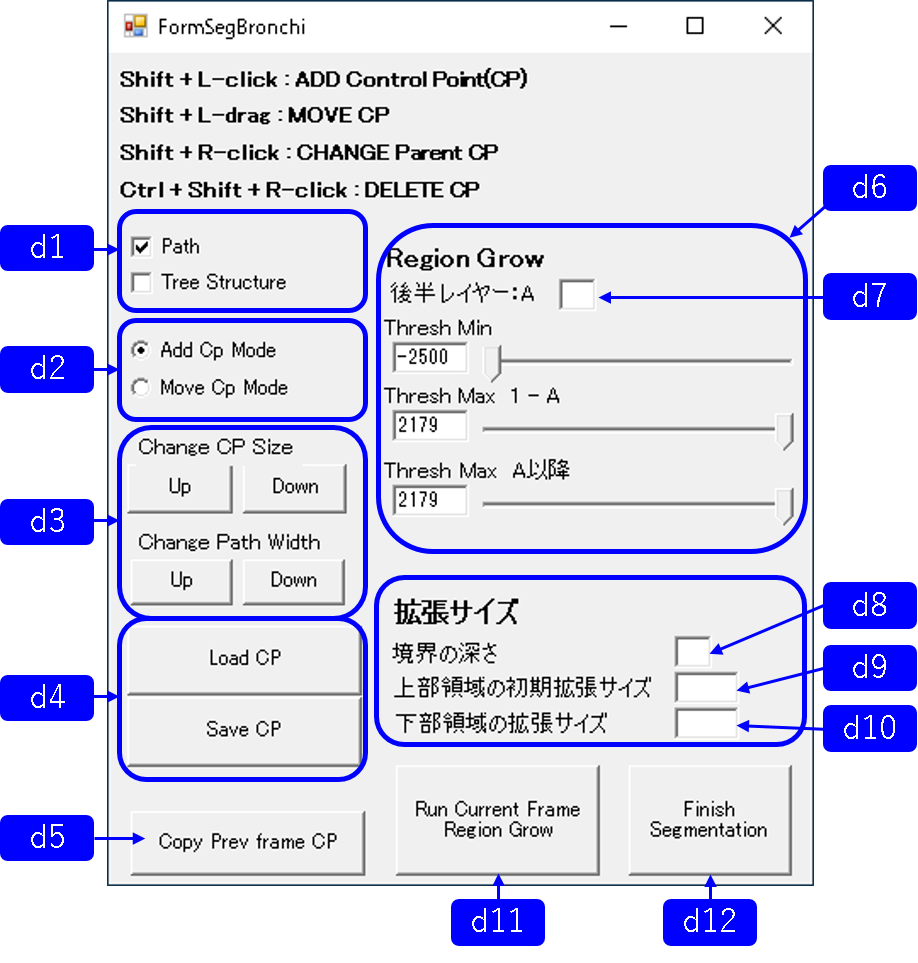

Parallel Contors

top page I/O Visualization Segmentation Refinement code
Local Region Growing
このツールは、気管・気管支領域（だんだん細くなる分岐構造を持つ領域）を、木構造を持つ制御点を配置することで、半手動的に分割するツールです。
参考「高田康平, 道脇 幸博, 森谷 浩史, 井尻 敬. 胸部4次元CT画像より気管支領域を抽出するための最短路探索を利用した領域分割法. 画像電子学会 第299回研究会, 愛媛県松山市, 2022/2/27-28 (発表日2/27).」
参考「高田康平, 道脇 幸博, 森谷 浩史, 井尻 敬. 胸部4次元CT画像より気管支領域を抽出するための最短路探索を利用した領域分割法. 画像電子学会 第299回研究会, 愛媛県松山市, 2022/2/27-28 (発表日2/27).」
Workflow
- 準備 : 肺利用域を分割し領域ID=1としておく（この領域が分割対象になる）
- ツールの起動：Click "Menu > mode switch > Seg Bronchi"
- 制御点の配置
- 領域拡張に関するパラメータ設定（閾値関連、拡張サイズ関連）
- 領域拡張：Click "Run Current Frame Region Grow"
- 終了：Click "Finish Segmentation"
Main Windowのユーザインタフェース
「Add Cp Mode」モードShift + L-click : クリックした位置に制御点の配置
Shift + R-click : クリックした制御点を親制御点に変更
「Move Cp Mode」モード
Shift + L-drag : クリックした制御点の移動
「Add Cp Mode」「Move Cp Mode」両方で行える操作
Ctrl + Shift + R-click : クリックした制御点を削除
Ctrl+L-drag : 曲面切断面の描画
Left-drag : 視点平行移動
Right-drag : 視点回転
Middle(Wheel)-drag : 視点拡大縮小
Wheel : スライスの移動
「n」キー : 元画像と先鋭化画像の表示切り替え（領域分割を"Finish Segmentation"せずにモード変更する場合必要）
※先鋭化画像を表示したまま Finish Segmentationを行うと、読み込んだ画像が先鋭化画像に切り替わってしまいます。
|  |
d1.パスの表示・非表示の変更（制御点間の最短路と制御点の持つ木構造に関して） d2.モード変更 d3.制御点とパスのサイズ変更 d4.制御点情報のロード・セーブ d5.前のフレームの制御点情報コピー d6.領域拡張の閾値に関するパラメータ設定 d7.閾値に関する後半レイヤーの設定 d8.拡張サイズの上部領域・下部領域の境界となる深さ設定 d9.上部領域の初期拡張サイズ設定 d10.下部領域の固定拡張サイズ設定 d11.現在のフレームに領域拡張実行 d12.領域分割終了 |